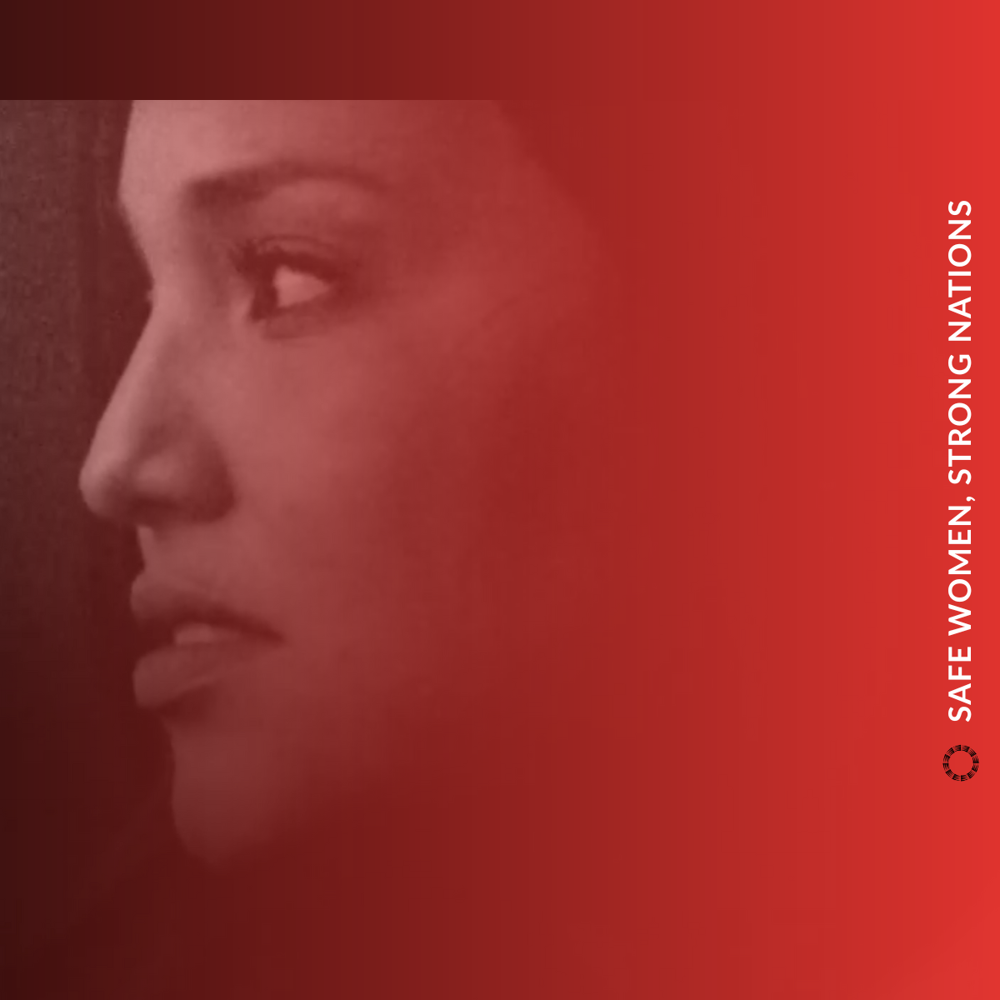
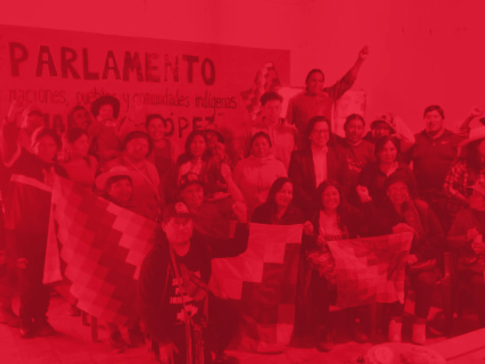
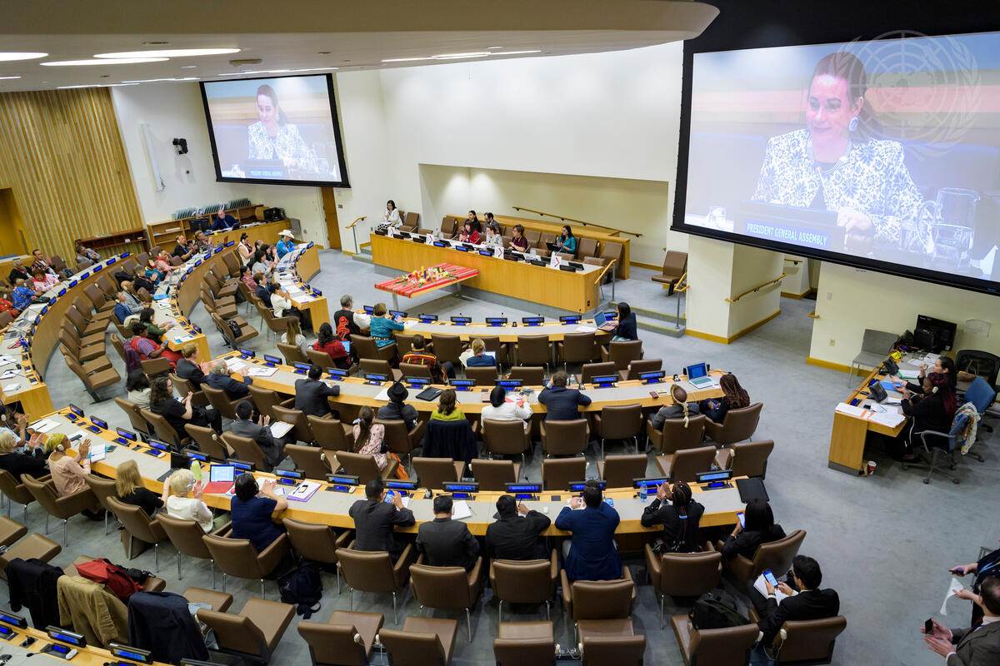
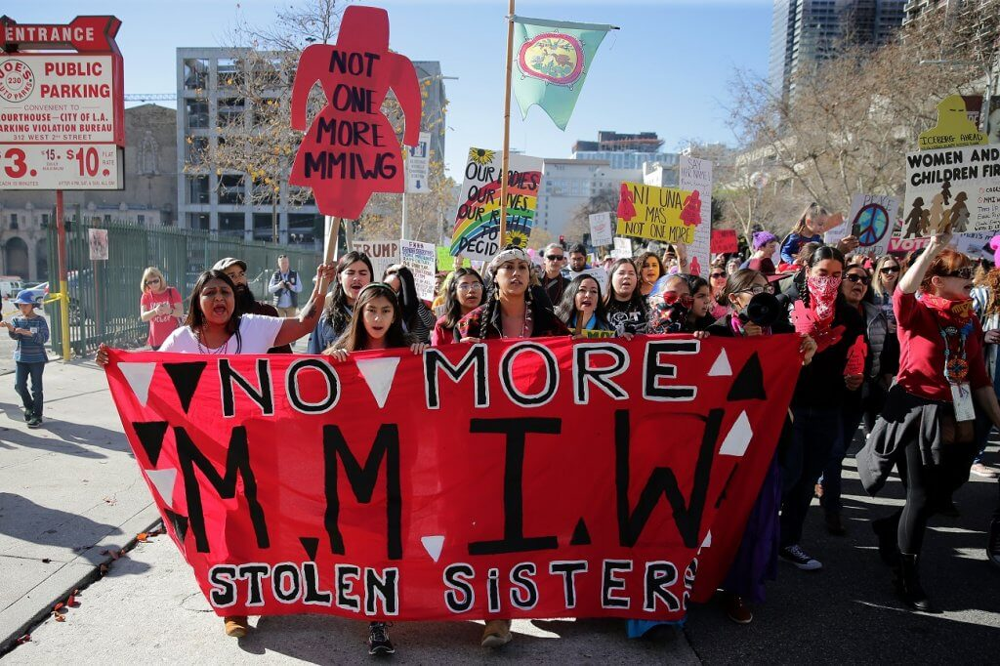

The Indian Law Resource Center is a nonprofit law and advocacy organization established and directed by Indigenous people with the main goal of preserving the well-being of Indian and other Native nations or tribes by providing free legal assistance. Founded in 1978 by Robert T. Coulter to confront the glaring gap in justice for Indigenous communities across America, which had no public interest organization willing to fight for their rights in court. Their work spans from protecting Indigenous lands and natural resources, defending human rights and cultural heritage, ending violence against Native women, and advocating for environmental justice across the Americas. Notably, they played a leading role in securing rights for many Indigenous communities through the adoption of the United Nations Declaration on the Rights of Indigenous Peoples. Today, the center operates across 4 regions around the world with 29 ongoing projects after 45 years of service, providing legal assistance to all Indigenous people throughout the Americas for free. The Center works alongside key partner organizations to expand its impact. Domestically, it works closely with the National Congress of American Indians and the National Indigenous Women's Resource Center to address violence against Native women and strengthen policy efforts. Internationally, it collaborates with groups like COIAB, APIB, and AIDSEEP to support indigenous land rights, protect community leaders, and advocate for environmental preservation throughout South America. They also hold NGO consultative status with the United Nations Economic and Social Council, giving them a voice in global human rights discussions.



The Indian Law Resource Center addresses one of the overlooked human rights crises in the United States, violence against Native Women in tribal lands and in Alaska Native Villages. More than 4 in 5 American Indian and Alaska Native Women experienced violence in their lifetime, and more than 1 in 2 have experienced sexual violence.
For more than 35 years, the United States law has stripped Indian nations of all criminal authority over non-Indians, meaning the tribal nations could not prosecute non-Indians who reportedly commit 96% of sexual violence against Native Women. In fact, between 2005 and 2009, US attorneys refused to prosecute 67% of Indian country matters referred to them involving sexual abuse.
However, the Indian Law Resource Center fought to protect Native Women by partnering with Congress, and they secured the 2013 reauthorization of the Violence Against Women Act, which is a landmark victory because it allows tribal nations to prosecute non-Native offenders who have committed crimes in the tribal lands and keep them accountable. They also brought the crisis before the United Nations and the Organization of American States and pressured the U.S. to act. And through their Safe Women, Strong Nation Projects, they provide tribal nations and Native women's organizations with training, legal assistance, and support to build the capacity to investigate, prosecute, and punish those who commit crimes against women.


The Center's Safe Women, Strong Nation project partners with Native women's organizations and Alaska Native nations to end violence against Native women and girls across America by providing free legal assistance, policy advocacy, and on-the-ground support to communities that have been failed by the legal system for decades.


They see my face and think they know my story They believe they've read me without turning the page A quiet, smart, and humorless Asian boxed in a single frame A background noise in the halls where I am never seen or heard They joke about my name, history, and culture Like they would know the struggle of a person Or the sleepless nights knowing I would not visit my family Or how I eat food alone in the stinky school bathroom "Go back to your home, you stinky Asian," they say But where should I go, to your home or to your grandmother's house Because this is the place where I made a comfortable home with huge dreams. What many people realize is that my roots stretch as far as the ocean Yet, the voice, the passion, the dream, and the freedom were raised here Whether it be in the school, home, or the country, it has given me opportunities So I am not your stereotype to you or others or a Trend or a Punchline Not a "Model Myth Minority" to divide us and pretend we won't notice Asian Americans are not people who can be written off based on their faces We are not a joke to you or others We are not an ethnicity that you can laugh at We are not who you can assume based on our physical identity. We are an ethnicity that has countless languages that people speak We share countless stories in one shared space We carry strength in silence We carry the dream and achieve the dream We are leaders, artists, dreamers We stand together, louder and stronger And we are part of this nation's history in the past and the future Say no to xenophobia and stereotypes that don't represent us Say no to hate crimes against Asian Americans Stand with us in fighting hate and racism Because nobody can divide others if we stand together
This poem was based on my experiences in eighth grade. When I joined public school after attending online school, I began to understand what it felt like to be judged for my identity. During that time, I faced a lot of comments about my culture, my name, and my identity, my food, and I treated it like a joke, and to this day, it stays with me, even if I am in high school, still thinking about those moments. There were days when I felt like an outsider in my Middle School, especially since I looked different and was judged based on my skin color or the food my mom packed every day. Those small moments made me feel like a weird Indian kid, or the comments like "do you eat butter chicken," or " Do you guys pray to multiple gods, or you guys stink. What hurt the most were the words and assumptions, and how people define others based on their identity or their culture. However, as I started to become more mature, I have realised that my identity is shaped by my parents' belief in hard work and success, my culture, and growing up in both India and America, and my identity is my strength, not something to be mocked or made jokes of, and I will always be proud of my culture. I wrote this poem to describe life as an Asian American living in America and to hopefully inspire others to speak up against hate, xenophobia, or speak up against false stereotypes that could affect an entire community. Furthermore, I hope it inspires people to continuously speak up against hate and make the world a safer place for everyone because the world is a better place when there is diversity and acceptance of different cultures.
Learn more about the Indian Law Resource Center by clicking on the photo below!
"Indian Law Resource Center." Indianlaw.org, indianlaw.org. Accessed 17 Apr. 2026.
"Indian Law Resource Center | Gruber Foundation." Yale.edu, 2025, gruber.yale.edu/recipient/indian-law-resource-center. Accessed 17 Apr. 2026.
"Robert T. Coulter." Breakingthroughpower.org, spring.breakingthroughpower.org/speaker/robert-t-coulter/. Accessed 17 Apr. 2026.